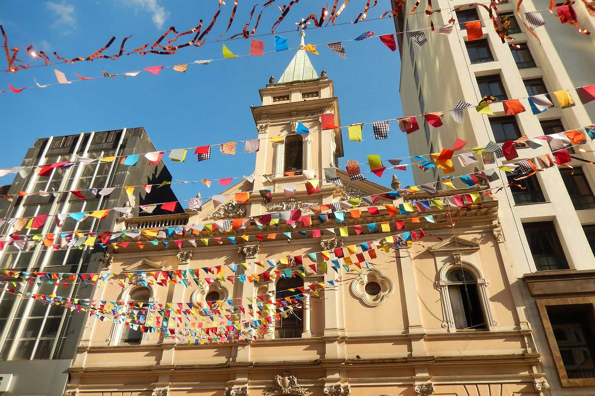

FESTAS JUNINAS
As melhores festas juninas do Brasil para curtir em junho e julho
Chegou a época de vestir a camisa xadrez, colocar o chapéu de palha e se jogar nas comidas típicas, músicas animadas e quadrilhas cheias de cor e energia. Os meses de junho e julho são sinônimo de Festas de São João, um dos eventos mais queridos pelos brasileiros — perdendo apenas para o Carnaval. De norte a sul do país, cada região celebra à sua maneira os dias de Santo Antônio (13/06), São João (24/06) e São Pedro (29/06), com tradições que vão do forró ao casamento na roça, passando por pamonha, canjica e, claro, o quentão. Confira abaixo os destinos mais incríveis para você curtir o melhor do São João no Brasil:
São Paulo (SP) - Quermesses para todos os gostos
Ideal para: famílias, casais, veganos e fãs de boa comida Na capital paulista, o mês de junho ganha um sabor especial com quermesses espalhadas por toda a cidade. Logo no começo do mês, a tradicional Festa Junina da Igreja da Consolação já anima os visitantes com shows de forró e sertanejo, além de delícias como canjica, pamonha, quentão e carne louca. O Centro de Tradições Nordestinas também realiza a famosa festa “São João de Nóis Tudim”, com apresentações culturais, quadrilhas, comidas típicas e muita alegria. E para quem tem restrições alimentares, a Festa Junina Vegana é imperdível: tem arroz-doce e canjica com leite de amêndoas, além do criativo sanduíche de jaca louca.
Rio de Janeiro (RJ) - Tradição com vista para o mar

Ideal para: quem ama festas com história e muito ritmo O Rio de Janeiro celebra o São João com charme e tradição. No Beco das Sardinhas, a festa “Pois era noite de São João” revive os antigos arraiás com trios de forró pé-de-serra, poetas, quadrilhas e muita nostalgia. Uma viagem no tempo em pleno coração da cidade. Outro destaque é a animada festa da Igreja São Francisco Xavier, repleta de barraquinhas, comidas típicas e brincadeiras. E para quem busca uma experiência completa, tem a Festa Junina da Boa Viagem, com parque de diversões, shows ao vivo, fogueira e o tradicional torneio de quadrilhas profissionais.
Campina Grande (PB) - Um São João de proporções épicas

Ideal para: casais, famílias e quem quer viver uma das maiores festas do Brasil Conhecida como uma das maiores festas de São João do mundo, o arraiá de Campina Grande, na Paraíba, acontece na imensa Praça Parque do Povo. A programação mistura shows nacionais, danças típicas, quadrilhas, repentistas e barracas com o melhor da culinária nordestina. Destaque para a “Locomotiva Forrozeira”, um trem temático que leva os passageiros até o distrito de Galante ao som de forró ao vivo dentro dos vagões. Um passeio que é pura alegria!
Caruaru (PE) - A Capital do Forró em festa o mês inteiro

Ideal para: quem ama dançar, comer bem e se encantar com tradições populares Caruaru, no Agreste de Pernambuco, não leva o título de Capital do Forró à toa. O São João por lá dura o mês inteiro, com programação intensa no Pátio de Eventos Luiz Gonzaga e no bairro Alto do Moura. As famosas “drilhas”, blocos de quadrilha que desfilam como no Carnaval, são um espetáculo à parte. Além disso, Caruaru ainda promove o Festival de Comidas Gigantes, com pratos típicos como pamonha e bolo de milho em tamanhos impressionantes.